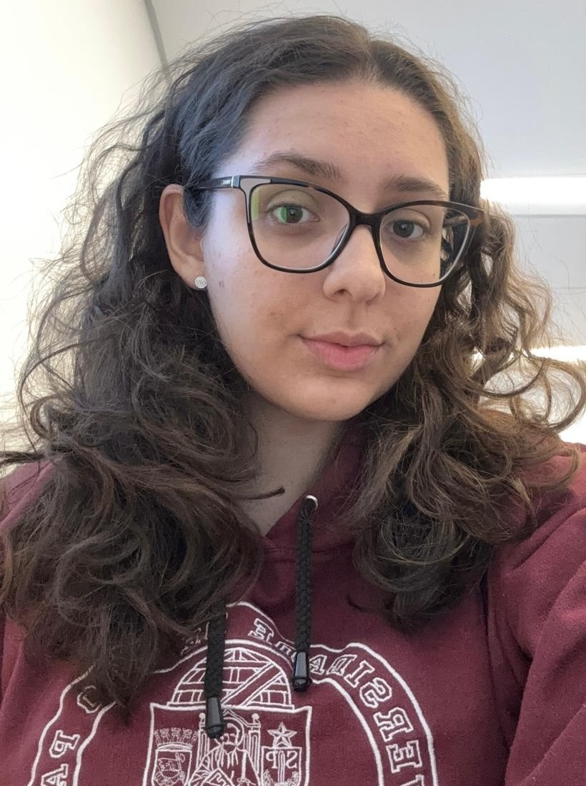
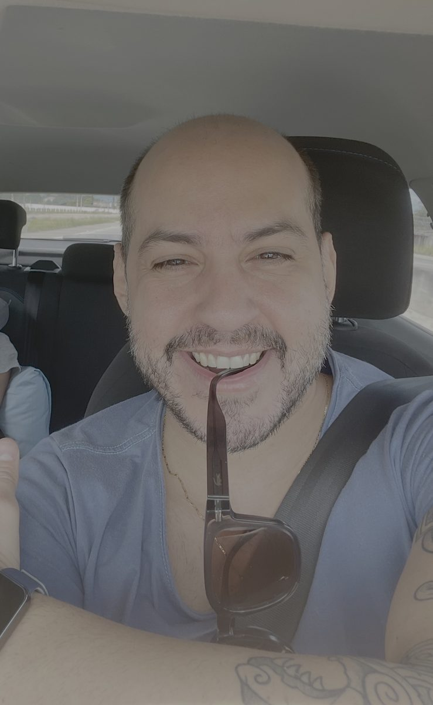

Equipe
Uma equipe multidisciplinar unida pelo compromisso com a revitalização linguística e o respeito às comunidades indígenas.
-

Fabrício Ferraz Gerardi
Linguística Computacional
Doutor em Linguística, mestre em Linguística Computacional, especialista em estrutura da linguagem. Pesquisa documentação e revitalização de línguas indígenas, com atuação em Mato Grosso e parcerias com escolas e universidades.
-

Gustavo Polleti
Engenharia e Coordenação
Engenheiro com experiência em machine learning e infraestrutura tecnológica. Mais de 6 anos como engenheiro de aprendizado de máquina em empresas como Nubank e Wildlife Studios. Líder técnico do projeto.
-

Michel Correa da Silva
Diretor Escolar Indígena
Servidor público do Estado de Mato Grosso há nove anos, com formação em Matemática Plena e especialização em Ciências da Natureza e Matemática pelo IFMT. Desde 2025, é Diretor da Escola Estadual Indígena Enawenê Nawê.
-

Maria Eduarda Correr (Duda)
Pedagogia
Formada em Letras – Português e Espanhol (bacharelado e licenciatura) pela USP. Especialização em Neurociência e Aprendizagem pela USP (PECEGE-USP). Pesquisa metodologias e práticas pedagógicas com fundamentos neurocientíficos.
-

José Ícaro Bezerra Clemente
Engenharia de IA e ML
Arquiteto de soluções de Inteligência Artificial, especialista em prompt engineering. Especialista em modelos de linguagem, RAG e infraestrutura semântica.
-

Fernando Orphão de Carvalho
Linguística/Antropologia
Professor do Setor de Linguística do Departamento de Antropologia do Museu Nacional da UFRJ. Especialista em linguística histórico-comparativa das famílias Tupi-Guarani, Arawak e Carib da América do Sul.
-

Carolina Aragon
Linguística Antropológica
Mestre pela Universidade de Brasília e Doutora em Linguística pela Universidade do Hawai'i. Professora do Departamento de Língua Portuguesa e Linguística da UFPB. Pesquisas linguísticas e etnográficas com povos das terras baixas da Amazônia.
-

Tiago Tresoldi
Linguística Histórica Computacional/Análise de Dados
Formado em Letras pela Universidade Federal do Rio Grande (FURG) e pela Università di Pisa (UniPi), mestre e doutor em Letras pela Universidade Federal do Rio Grande (FURG). Pesquisador afiliado ao Departamento de Linguística e Filologia da Universidade de Uppsala (Suécia).


Junte-se a nós
Estamos sempre buscando colaboradores comprometidos com a revitalização de línguas indígenas. Entre em contato.